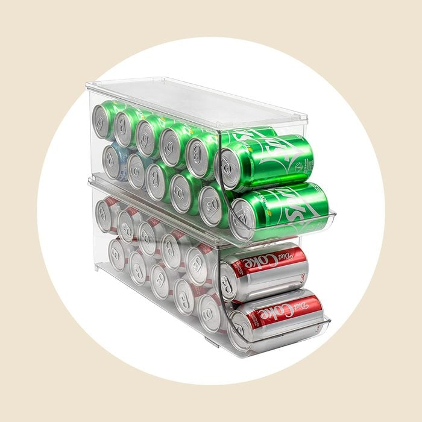
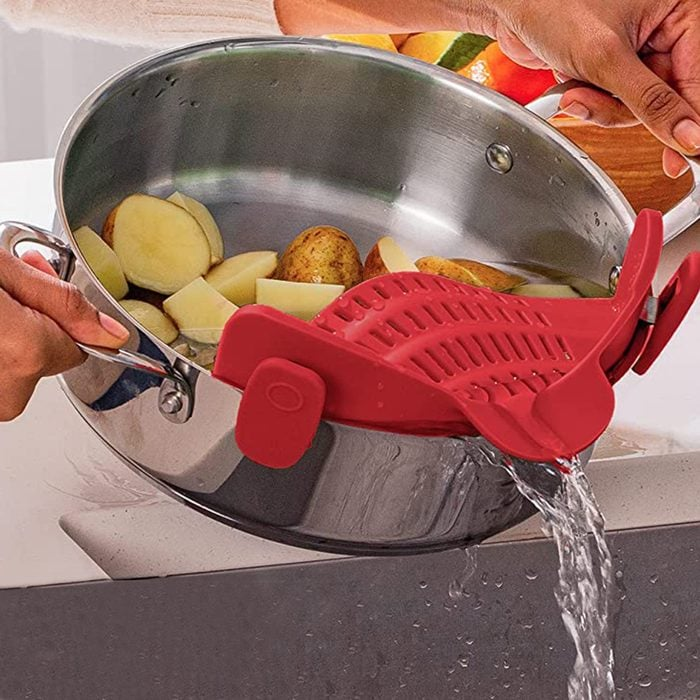
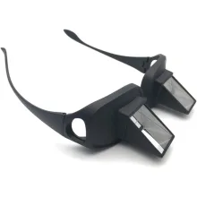

This is the products page.
A showcase of random products found on the internet :0
This is a Bread Shaped Pillow. It's a silly pillow that you can gift to your family or friends. The material is buttery soft and the 40-inch loaf is plush and great for resting on.

This is a Can Organizer. It is a space-saving can dispenser that helps you organize your canned goods in your pantry or kitchen cabinet. It features a tiered design that allows you to easily see and access your cans, while also maximizing storage space.

This is a Clip On Strainer. It is a convenient kitchen tool that allows you to easily strain liquids from pots and pans without the need for a separate colander. The clip-on design ensures a secure fit on most pots, making it easy to drain pasta, vegetables, and more.

This is a Lazy Reader Glasses. It is a unique pair of glasses designed to help you read comfortably while lying down. The horizontal mirror allows you to see the page without straining your neck, making it perfect for reading in bed or on the couch.
Click on the images to find the source of the product.